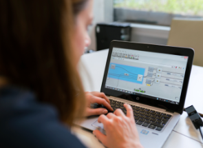

Nos formations en développement

Concepteur Développeur d’Applications
Bachelor IT – 3 ansLa formation Bachelor IT – Spécialisation Développeur Web délivre un titre RNCP de Concepteur / Développeur d’applications de niveau 6 européen (équivalent BAC+3/4)
CONDITIONS D’ENTRÉE
- ➜ Après une 1e année de bachelor IT à La Plateforme.
- ➜ Entrée directe possible si vous avez déjà une appétence pour la technologie, la programmation, etc.
- ➜ Accès direct en BAC+3 possible sur dossier.

Développeur logiciel / DevOps
Bachelor IT – 3 ansLa formation Bachelor IT – Spécialisation Développeur logiciel / DevOps délivre un titre RNCP de niveau 6 européen (équivalent BAC+3/4)
CONDITIONS D’ENTRÉE
- ➜ Après une 1e année de bachelor IT à La Plateforme.
- ➜ Entrée directe pour les profils motivés.
- ➜ Accès direct en BAC+3 possible sur dossier.
Ingénierie du Web
Cette formation du Master of Science prépare au métier de Chef de projet en Développement Web & Web Mobile, et vous permet d’obtenir un titre RNCP de niveau 7, équivalent BAC+5.
CONDITIONS D’ENTRÉE
- ➜ Après un bachelor IT Développeur web & web mobile à La Plateforme.
- ➜ Accès direct possible sur dossier, entretien et test de positionnement.